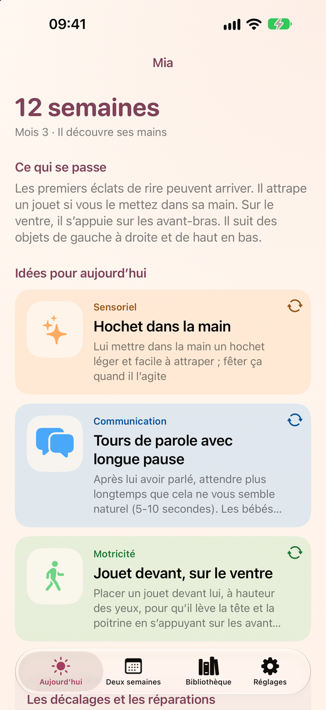
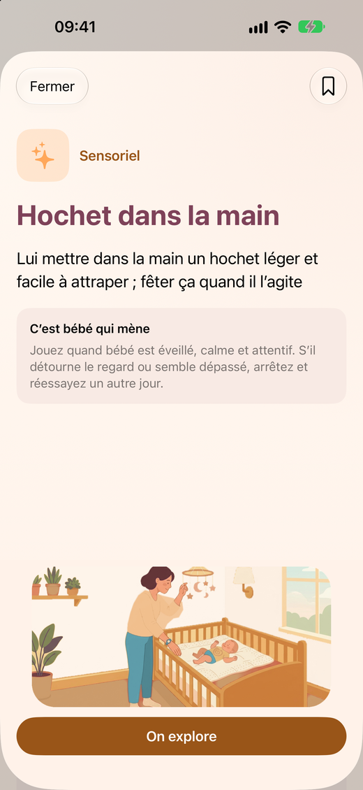
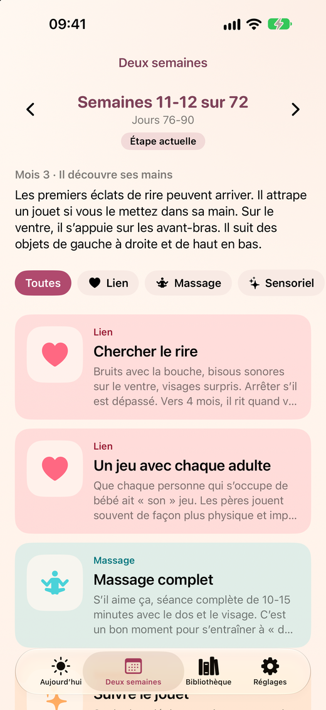

Baby & Bond
Jouez et créez du lien
Baby & Bond aide les mères et les pères à interagir avec leur bébé, à créer du lien et à rendre leur bébé heureux. Chaque jour, l’app vous propose des idées simples pour jouer, observer et être ensemble, adaptées à l’étape exacte de bébé, de 0 à 18 mois.



Ce que propose l’app
- Chaque jour, trois idées pour jouer avec bébé, de thèmes différents : lien, massage, sensoriel, motricité, communication et autonomie.
- 36 étapes de deux semaines, de 0 à 18 mois.
- Âge corrigé pour les bébés prématurés et prise en charge des jumeaux.
- Un guide à consulter : principes, signes de bébé, massage pour bébé, sécurité et écrans, et sources d’information.
- Disponible en français, español, català et English.
- Sans compte, sans publicité et sans collecte de données.
Gratuit pour essayer, un seul paiement pour tout avoir
Gratuit : une des trois idées de chaque jour, l’étape actuelle, le guide de sécurité et jusqu’à 3 activités enregistrées. Avec un achat unique, sans abonnement, vous débloquez toutes les étapes, les trois idées quotidiennes, tout le guide et un nombre illimité d’activités enregistrées.
Baby & Bond est une app de jeu et de lien. Elle n’est pas pédiatrique et n’évalue pas le développement : pour toute question de santé ou de développement, adressez-vous à votre pédiatre.
Une question ou une suggestion ? Consultez la page assistance.